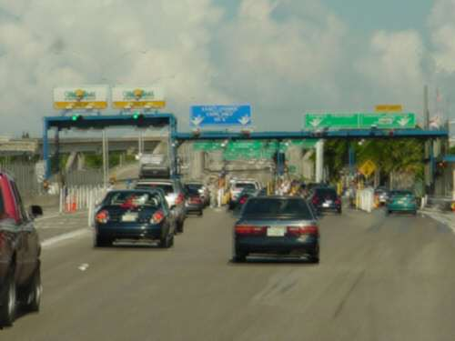
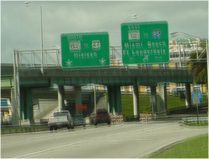

Driving Problems after LASIK
While many patients have problems driving at night after LASIK, some patients also have problems driving during the day. In general, daytime vision after LASIK is better because sunlight shrinks the pupil, blocking light from entering through a larger surface area of the irregular post-LASIK cornea. However, some patients report blurry vision and ghosting even in the best lighting conditions. Some patients can't even pass a driving test, which generally requires 20/40 vision. Many of these patients worry that states may eventually adopt vision quality testing, and that they could lose their license even with 20/40 vision.



Some images courtesy VisionSimulations.com